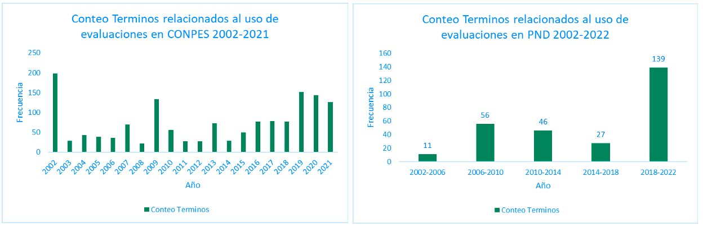
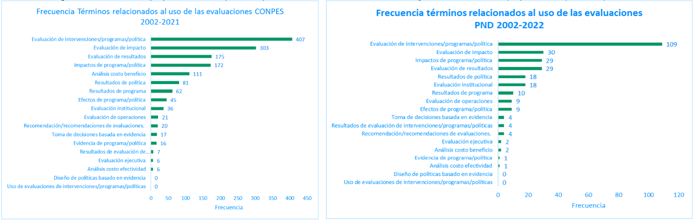
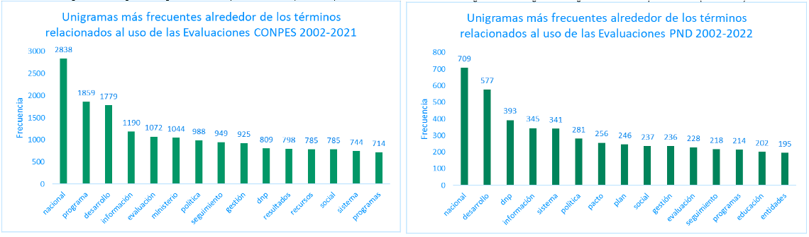
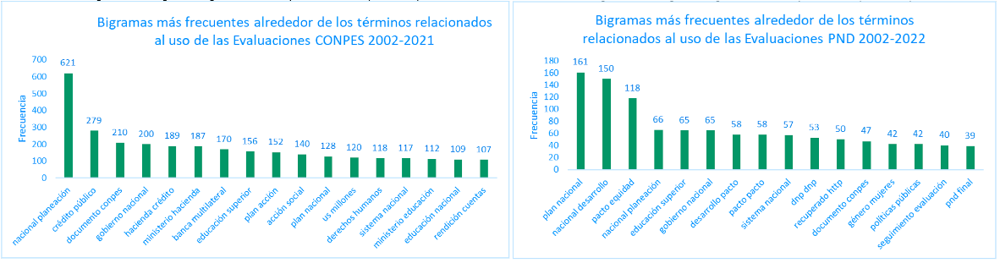

NLP Analysis of Tweets and Public Policy Documents for Public Policy Evaluation Terms in Colombia
In this project, natural language processing (NLP) is used to identify and count terms related to the evaluation of public policies in CONPES (National Council for Economic and Social Policy) documents from Colombia for the period 2002-2021, as well as in the National Development Plans (PND) of Colombia for the period 2002-2022. The objective is to quantify the importance of public policy evaluations at the national level. Additionally, web scraping was performed using the Tweepy library to download tweets from previously selected government and academic accounts in order to evaluate the use of the same terms.
The project involved the following steps:
- Reading, cleaning, identifying, and counting the terms of interest (Outcome evaluation, impact evaluation, cost-benefit analysis, cost-effectiveness analysis, etc.)
- Generating a normalized index of term counts per document, i.e., the average count of words related to public policy evaluations per document.
- Generating a contextual analysis by counting the unigrams and bigrams that occur around the initially sought terms.
- Performing web scraping using the Tweepy API to download tweets from selected accounts of interest, and then searching for and counting the terms of interest.
Counting of terms by dimensions and generation of the normalized index of terms counts.
In this step, several processes are generated to clean the text. These processes reduce the number of words that make up the entire universe of documents, which facilitates the automatic search and matching of the terms of interest within the documents.
- Document Reading: In this first stage, all documents are read. Optical Character Recognition (OCR) is used to extract text from images or scanned documents.
- Text Cleaning: In this stage, punctuation marks are removed, numbers are converted to lowercase, and stopwords are removed. Stopwords are words that do not have meaning on their own, such as articles, pronouns, and prepositions, as well as context-specific words that may be very frequent but do not add value. In this case, names of people, municipalities, and departments in Colombia are removed.
- Text Lemmatization: In this step, all inflected forms of a word are transformed into its lemma or root. For example, words like "mesas," "mesón," and "mesitas" are all transformed into their lemma, "mesa."
- Phrase Search: The document is divided into pages and then into smaller text fragments called analysis windows. Each analysis window consists of 250 words. In some cases, it may contain fewer words due to the number of words per page. The search for words/phrases is carried out in each of these fragments using regular expressions, and the count of each term or phrase is performed.
As a result of this procedure, a table is generated containing the count of terms, structured as follows:
| DIVIPOLA DOCUMENT CODE | TERM | COUNTING | |
|---|---|---|---|
| 24 | Institutional evaluation | 20 | |
| ... | ... | ... | ... | <
| 24 | Evidence-based decision making | 4 | <
The number of terms related to public policy evaluation per year are graphed. In the case of the PND documents, to note a significant increase in the document for the period 2018-2022, with 139 words, compared to earlier periods. In the CONPES documents, to observe a higher number of words in the years 2019 to 2021.
The following graph shows the number of times each term was found in the documents. The terms with the highest number of occurrences are "evaluación de intervenciones/programas/política" with 407 appearances in the CONPES documents and 109 in the PND documents, followed by "evaluación de impacto" with 303 appearances in the CONPES documents and 109 in the PND documents.
After counting the terms of interest, an average of the number of terms per document is calculated for the CONPES documents, as there are multiple documents per year, unlike the PND, which corresponds to a single document per period. In 2019, 2020, and 2021, there are more terms on average with 5.8, 3.8, and 3.2 terms respectively.
Context analysis.
The contextual analysis involves examining the terms that surround the terms of interest. To do this, the windows (groups of 250 words) where the terms related to digital transformation were found are analyzed, and the other terms found in these windows are counted. The most frequent unigrams obtained were "nacional" for both types of documents, and the most frequent bigrams were "plan nacional" and "nacional planeación.
 These analyses were generated at the term level, meaning that the words can be analyzed in context per term, per dimension, or per groups of terms. For this purpose, a table with the counts is generated with the following structure:
| DIVIPOLA DOCUMENT CODE | TERM | CONTEXT WORD | COUNTING |
|---|---|---|---|
| 24 | Impact evaluation | Public policy | 20 |
| ... | ... | ... | ... | <
| 24 | Institutional evaluation | Higher Education | 4 | <
Scraping and Text Analysis of Tweets
In this step, tweets are downloaded from the accounts of interest from 2014 to 2021. The cleaning and preprocessing process is then performed, which includes removing special characters, cleaning stopwords, and lemmatization, similar to what was done with the documents. Once the tweets are prepared, a search is conducted for words related to the use of evaluations. This is done through frequency tables that show, for each tweet, the number of times each of the terms related to the use of evaluations appears.
As a result, a database is generated containing 82 tweets that were published by the accounts of interest and that contain 118 terms related to the use of evaluations. For the counting, each of the words in the term is searched for, and it is counted if the tweet contains the words that make up the term, regardless of the order. The following graph shows the number of terms found in the tweets.
Full report: To view full report and presentation click below (Available in Spanish).